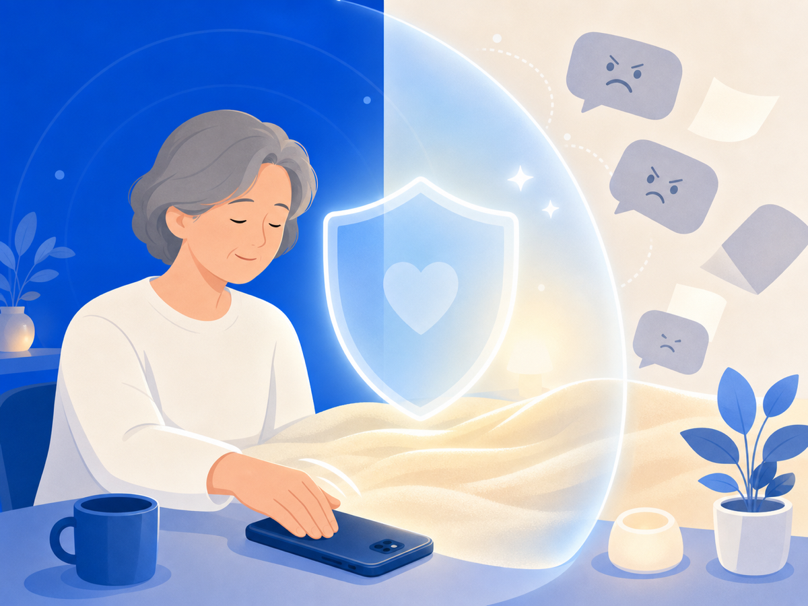

"'그만 보기'는 회피가 아니라 자기 보호예요"


악플을 안 보겠다고 결심해도 마음 한구석이 찜찜하죠. "혹시 더 심해지면?", "증거를 남겨야 하는데 그냥 차단해도 되나?" 그래서 차단하고 싶으면서도 못 하고, 안 보고 싶으면서도 계속 확인하게 돼요.
이 모순이 피해를 더 길게 끌어가는 원인이에요.
전문가들이 가장 먼저 권하는 건 '차단'이에요
사이버폭력 전문가들이 피해자에게 가장 먼저 권하는 행동 중 하나는 가해자 차단, 그리고 해당 콘텐츠에서 거리 두기예요. 이게 회피처럼 느껴질 수 있는데, 전문가들의 시각은 달라요.
즉각 반응하거나 내용을 자꾸 다시 보는 건 오히려 상황을 악화시킬 수 있어요. 감정을 먼저 안정시키는 게 중요하다는 거예요. 사이버불링은 시공간의 제약 없이 이어지고, 피해자들은 절망감과 무기력감을 경험해요. 그 고리를 끊는 첫 번째 행동이 차단이에요.
'안 보기'는 도망이 아니에요
피해를 당한 상황에서 그 내용에 계속 노출되는 건, 상처를 스스로 반복해서 건드리는 것과 같아요. 카스퍼스키의 사이버폭력 영향 연구에 따르면, 폭력이 멈춘 뒤에도 피해자는 오랫동안 수치심과 무력감을 경험해요.
상처가 아물려면 새로운 자극을 최소화하는 환경이 필요해요. 안 보는 것은 포기가 아니에요. 자신의 회복을 위해 유해한 자극으로부터 거리를 두는, 적극적인 자기 보호예요.
그런데 증거는 어떡하죠
여기서 현실적인 모순이 생겨요. 사이버폭력 대응에서 전문가들은 증거 보존도 강조해요. 신고와 법적 대응 모두 증거가 필요하거든요.
"안 봐야 하는데, 증거는 남겨야 한다." 이 모순이 피해자를 다시 그 내용 앞으로 데려와요.
그래서 오늘 할 수 있는 건
안 보면서 증거를 남기는 방법이 있어요. 지금 당장 가해 계정을 차단하고 알림을 꺼두세요. 그리고 화면을 남겨야 할 때는 직접 오래 들여다보지 않고도 화면을 캡처하거나 저장할 수 있는 방법을 찾아보세요. URL과 날짜가 보이도록 저장하는 게 핵심이에요.
그만 보는 것은 당신이 약해서가 아니에요. 지금 할 수 있는 가장 현명한 보호예요.
이 글은 일반 정보예요. 구체적인 일은 전문가(상담·변호사)와 상의하세요. 많이 힘들 땐 자살예방상담 109(24시간)가 있어요.